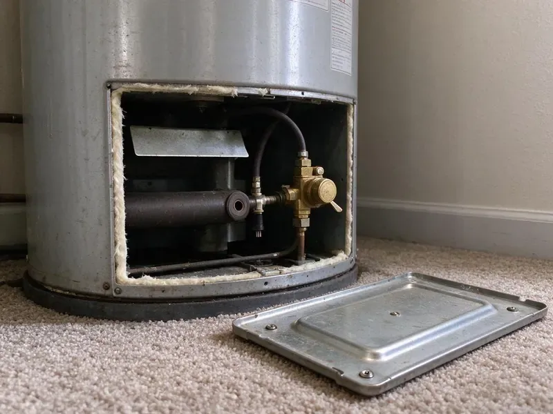
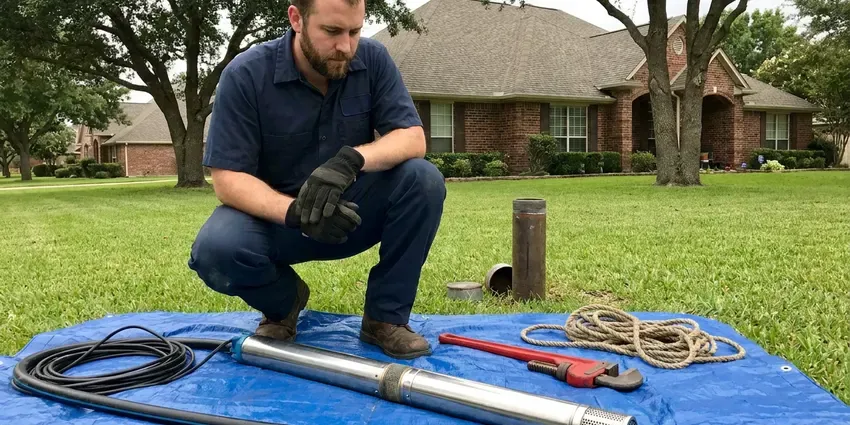
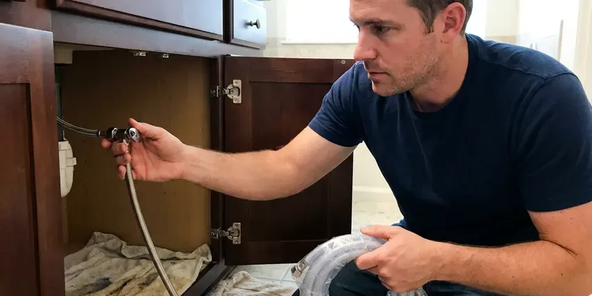
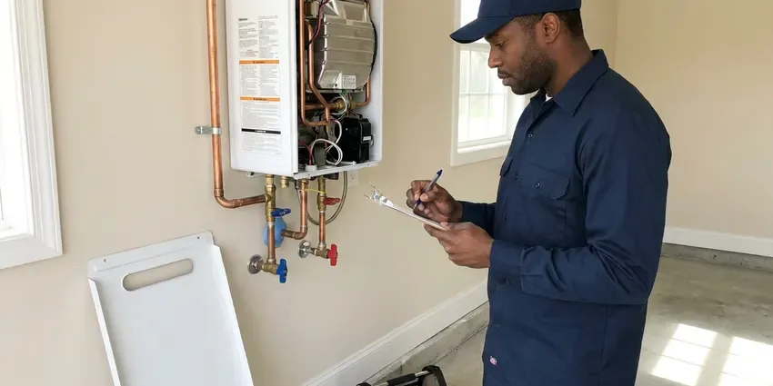
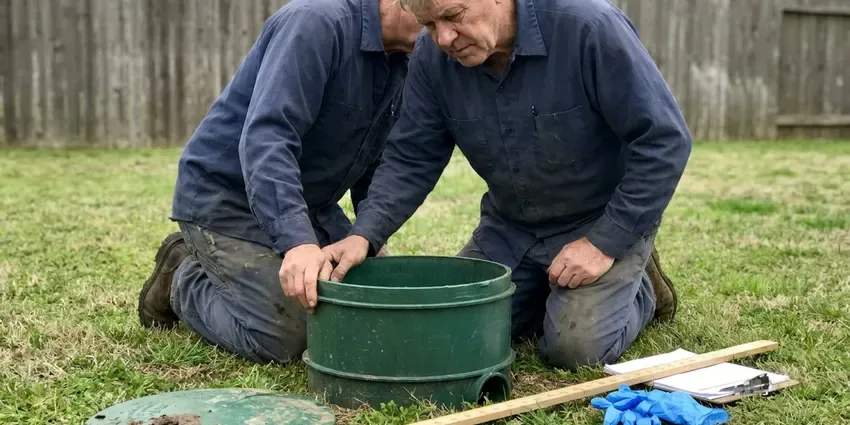
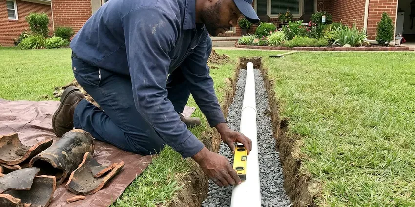

Gas Water Heater Repair in Barre, VT
Gas water heater repair across Barre, VT, with leak and draft testing before we leave. Call CKV Plumbing for prompt service.
- Same-Day Gas Heater Repair
- Warrantied Workmanship
- Natural Gas & Propane
- Local Techs
Need Gas Water Heater Repair Right Now in Barre, VT?
A licensed plumber can usually be there within hours.
Local Gas Water Heater Repair in Barre, VT
CKV Plumbing works on gas water heaters for homeowners throughout Barre and the surrounding Vermont area. We can usually send someone out the day you call. The trucks carry the parts that fix most gas tank problems on the spot, including thermocouples, universal gas valves, pilot assemblies and relief valves. Anything unusual gets picked up at the supply house.
Some of what we do:
- Gas control and thermostat repair
- Testing and repairing pilot outages
- Power vent blower, pressure switch and flue draft repairs

Additional Plumbing Repair Services in Barre, VT
We offer expert plumbing repair services across Barre, VT to fix leaks, restore flow, and keep your system running smoothly.


Barre well pump repair specialists

Local water leak repair by CKV Plumbing, Barre

Tankless Water Heater Repair in Barre

Septic Tank Repair in Barre


Customers
Why Choose CKV Plumbing for Gas Water Heater Repair in Barre, VT?
Before any work starts, you hear what failed, why it failed and what it costs to fix, with no pressure to decide on the spot. We show you the bad part or the test reading. Questions are welcome.
- Clear Pricing, A written price comes before the first wrench turns.
- Repairs That Last, We install factory or listed parts that hold up.
- Gas Leak Testing, Every gas connection we touch is tested with an electronic detector and bubble solution.
Citywide Coverage
Downtown or out on the edges of Barre, a CKV Plumbing tech can usually reach you the same day, often within a few hours. Booking takes a few minutes. Most calls get a two-hour arrival window.
Experienced Team
Our licensed plumbers work on gas water heaters every week, including the brands and models you find most often in Vermont homes. A manometer and a millivolt meter go on every call. Combustion chambers do not scare them.
Safety-First Approach
After the repair, every gas joint gets an electronic leak check and a soap test, and the heater runs a full cycle while we watch the flame and the draft. Then we sign off. The invoice lists what was tested in your Barre, VT home.
Trusted Certified Barre Plumbing Services Professionals
At CKV Plumbing, we are proud to offer certified plumbing services throughout Barre, VT. Those papers on the wall mean something. Every repair, install and maintenance visit follows strict safety and quality rules, and the plumbers doing the work carry recognized industry credentials.
Call Us Now PHCC Plumbing Contractor Recognition
PHCC Plumbing Contractor Recognition Better Business Bureau (BBB) Accreditation
Better Business Bureau (BBB) Accreditation Angi Certified Pro
Angi Certified Pro ISO 9001 Quality Management Certification
ISO 9001 Quality Management CertificationGas Water Heater Service for Barre, VT Homes
Repair or Replace: Straight Answers in Barre, VT
Before any wrench turns, you get a written price for the repair and an honest read on the tank in your Barre, VT home. A bad thermocouple on a six-year-old tank is an easy repair to justify. A fourteen-year-old tank with a rusty flue, a leaking bottom and a failed gas valve is a different story, and putting a $500 control on it rarely makes sense. We will tell you which side of that line you are on. The decision is yours.

Pilot Light and Burner Issues in Barre
A pilot that lights, holds for ten seconds and then goes out is almost always a thermocouple or a weak magnet in the gas valve. No flame at all usually means a plugged pilot orifice or a bad piezo. Burner trouble looks different. The pilot stays lit but the main flame never comes on, which points to the thermostat side of the valve, a tripped thermal cutoff or a flame arrestor so clogged with lint that the burner starves for air. We test each piece in that order.
Venting and Draft Repair in Barre, VT
Atmospheric tanks rely on hot exhaust rising through a metal flue with an upward slope of at least a quarter inch per foot. A loose, rusted or sagging section lets exhaust spill back into the house. The vent gets repaired. Each joint gets three screws, the connector gets proper clearance from wood and drywall, and we run the heater for several minutes with a smoke test at the draft hood to watch the exhaust go up. Spillage gets fixed before we leave.
Commercial Gas Water Heater Repair in Barre, VT
Restaurants and salons in Barre, VT burn through hot water faster than any house, and a down heater stops the business. Most commercial tanks hold 75 to 100 gallons and run far higher BTU inputs than a home unit. We work on those larger atmospheric and power vent units, including the electronic controls, the burner manifolds and the piping that ties two tanks together on one supply. Every hour down matters. Repairs can often be booked before you open or after you close.
Thermostat and Gas Valve Repair in Barre, VT
Scalding water at the kitchen tap is a valve problem until proven otherwise. Some controls drift high as the sensor ages, and some dials get turned past hot. Our plumbers in Barre, VT measure the outlet temperature at the nearest fixture, compare it to the dial and replace the gas control if it is overshooting, because water at 140 degrees can burn a child's skin in a few seconds. Most homes do fine at 120.
Urgent Gas Water Heater Repair in Barre, VT
A gas smell, a flooded garage or a relief valve blowing steam are the calls that cannot wait until Monday. CKV Plumbing runs emergency gas water heater repair across Barre, VT, with a tech who can shut the unit down, find the cause and make it safe the same day. Gas odor comes first. Open a door on the way out and call the gas utility from the yard. Once they clear it, we take care of the heater.
Flammable Vapor Sensor Repair in Barre
Since about 2003, most residential gas tanks have been built with a flammable vapor ignition resistant combustion chamber. A flame arrestor screen at the base lets air in and keeps flame from getting out. When lint, dust or pet hair coats that screen, the burner starves, the chamber overheats and a thermal switch shuts the whole heater down, sometimes several times a week. We clean the screen and the chamber. We replace any tripped thermal switch.

Gas Water Heater Repair Cost in Barre, VT
Thermocouple and pilot repairs usually run $150 to $350. Gas control valves often come in at $350 to $700 installed. Power vent blower work runs $400 to $800, and a full replacement with a new gas tank generally costs $1,600 to $3,000 depending on size, venting and whether the install needs code updates. Tank age drives the advice. Past about twelve years, we will show you both numbers.
Gas Water Heater Repair Near Me in Barre, VT
Searching for gas water heater repair near me in Barre, VT should turn up a plumber who can be there today. CKV Plumbing keeps techs spread across town, so the drive is short and the truck is already stocked with gas valves and pilot kits. Homes across Vermont put gas tanks in garages, closets and attics. Every spot comes with its own vent problems. We have worked in all three.
Close by is only half of it. You also want a tech who has worked on gas controls and venting for years. Our plumbers handle pilots, valves, burners and flues every week, and they carry a manometer and a combustion analyzer so they can confirm the heater is burning cleanly before they leave. Most calls finish in one visit.
CKV Plumbing at a Glance
- Licensed and insured plumbers serving Barre, VT
- Same-day appointments and 24/7 emergency response
- Clear written estimates, no hidden fees
- 4.8-star rated by 553+ Vermont customers
Barre Map
Barre Information
- Population
- 8,387
- Area codes
- Local
- Service area
- Barre and communities within 40 miles
- Nearby
- Montpelier, St. Johnsbury, Middlebury, Essex Junction
Garage gas water heaters in Barre, VT collect dust and dryer lint that clog the flame arrestor and trip the thermal switch. Cleaning that screen fixes a lot of pilot outages.
Expert Services
Reach out to CKV Plumbing for reliable plumbing work done by licensed pros in Barre, VT.
Our Specialized Plumbing Services in Barre, VT
At CKV Plumbing, we handle the full list of plumbing services across Barre, VT. We go from leak detection all the way to full system installations, for homes and commercial buildings, and we do it quickly at a fair price. Here are the core services we offer:


Our Gas Water Heater Repair Process in Barre, VT
Here is how we get your gas water heater back to producing hot water.
Contact Us
Reach CKV Plumbing at (802) 209-5139 and describe the problem. We book a tech for a time that works at your Barre home.
On-Site Diagnosis
The plumber runs the tests and finds what actually failed. We show you what we found.
Written Estimate
A written estimate comes before the first wrench turns. On an older tank, we price both repair and replacement.
Frequently Asked Questions About Gas Water Heater Repair in Barre
Most gas water heater repairs in Barre, VT land between $150 and $800. Thermocouple and pilot work is the cheap end, roughly $150 to $350. A gas control valve replacement usually runs $400 to $800 or more once you add the part, the labor and the leak testing on every joint we disturb. We quote once we know the cause.
For part swaps, almost never. Thermocouples, igniters and gas valves are treated as repairs by most building departments in Vermont. Replacing the heater or altering the gas piping or vent typically does need one. You will know before we start.
Pretty much all of them. Many brands, such as Rheem, Ruud, State and Whirlpool, share common parts. Bradford White uses its own controls, and Rheem and Ruud come from the same company, so between universal kits and brand kits the truck covers most heaters in a single trip. Rare models may need a supply run.
Same-day repair is the goal on most calls. Common parts are on the truck, so most jobs finish on the first visit. When a heater needs a brand-specific gas valve or a power vent blower, the supply house may need a day to get it, and we will leave the heater safe in the meantime. You will not be left guessing.
Get everyone out of the house first. Leave switches, plugs and the heater alone, and do not hunt for the leak. From outside, or from a neighbor's house, call the gas utility's emergency number, then call CKV Plumbing at (802) 209-5139 once they have made the area safe. Their crew goes in before ours.
Yes, including Rheem, Ruud, Bradford White, State, American Standard and A.O. Smith. Most residential tanks share a small set of control and pilot designs. That overlap means the truck can carry thermocouples, universal valves and pilot kits that fit most of what we find in Barre, VT homes, with brand-specific parts a phone call away. Odd models take a day to source.
Usually, yes. The common causes are a drifting thermostat, a weak burner or a tank half full of sediment. A broken dip tube is another possibility, since a cracked tube lets incoming cold water mix with the hot at the top of the tank instead of being delivered to the bottom near the burner. We check the easy causes first.
Yes, when the venting fails. Exhaust can spill indoors through a loose flue, a blocked chimney or a draft hood that backdrafts. We check draft on every repair with a smoke test or a combustion analyzer, and we look for heat-scorched paint or melted plastic near the draft hood, which are signs of spillage. A carbon monoxide alarm belongs on each floor of the house.
What Our Customers Say About Our Plumbing Experts

Megan L.
Our upstairs tub drained so slowly that every shower turned into a bath. CKV Plumbing pulled a wad of hair out of the stopper and then snaked the line past the trap. Three months later it still drains fast.
Drain Cleaning · St. Johnsbury, VT
Patricia H.
We had a slab leak that two other companies could not find. CKV Plumbing located it in under an hour with a listening device. They rerouted the line through the attic instead of breaking up the floor, so we kept our kitchen tile.
Slab Leak Repair · Essex Junction, VT
Jessica T.
We were adding a gas range in a kitchen remodel and needed a new line run from the meter. The plumber pulled the permit, ran the pipe through the crawl space, and had it inspected and approved within the week.
Gas Line Repair · St. Johnsbury, VT
Carlos V.
Our house still had galvanized pipe, and upstairs the shower was a trickle. The crew repiped everything in PEX over three days and patched every drywall hole before they left. The pressure difference is night and day.
Repiping · Montpelier, VTEmily R.
The shutoff valve under our kitchen sink snapped off in my hand on a Sunday morning. CKV Plumbing had someone out by early afternoon. He replaced both angle stops with quarter turn valves and showed me where our main shutoff was, which I honestly did not know.
Plumbing Repair · South Burlington, VT
Kevin O.
Before buying our house I paid for a sewer camera inspection. CKV Plumbing found a belly in the line that held standing water about forty feet from the cleanout. We used the video to get the sellers to fix it before closing.
Sewer Camera Inspection · South Burlington, VT